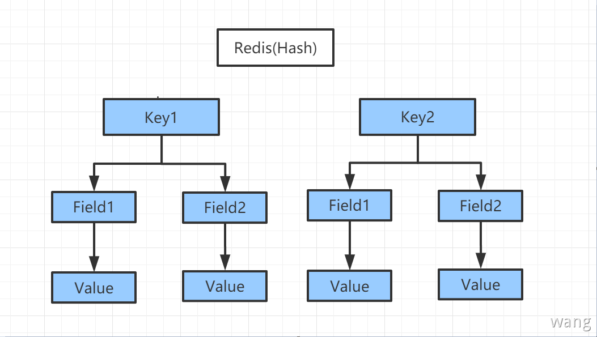

String字符串
Redis 字符串是字节序列。Redis 字符串是二进制安全的，意味着他们有一个已知的长度没有任何特殊字符终止，所以可以存储任何东西，512M 为上限，主要的还是操作键值对。String的数据结构是简单的 Key-Value模型，Value可以是字符串，也可以是数字。
set key value普通添加
1 2 3 4 127.0.0.1:6379 set name wangpengliang OK 127.0.0.1:6379 get name "wangpengliang"
setex key seconds value添加时设置过期时间
1 2 3 4 127.0.0.1:6379 setex name 30 wangpengliang OK 127.0.0.1:6379 get name "wangpengliang"
ttl检查key还有多少秒过期
1 2 3 4 5 6 7 8 127.0.0.1:6379 setex name 30 wangpengliang OK 127.0.0.1:6379 get name "wangpengliang" 127.0.0.1:6379 ttl name (integer ) 18 127.0.0.1:6379 >
setnx key value如果key不存在，则创建一个key，如果key存在，则创建失败并返回0；setnx 在分布式锁中经常使用到
1 2 3 4 5 6 7 8 9 10 11 12 13 14 15 16 17 18 127.0.0.1:6379 set name wangpengliang OK 127.0.0.1:6379 get name "wangpengliang" 127.0.0.1:6379 setnx name wangpengliang (integer ) 0 127.0.0.1:6379 FLUSHDB OK 127.0.0.1:6379 setnx name wangpengliang (integer ) 1 127.0.0.1:6379 get name "wangpengliang"
get key获取指定key的value
1 2 3 4 127.0.0.1:6379 set name wangpengliang OK 127.0.0.1:6379 get name "wangpengliang"
mset/mget用于同时设置/获取一个或多个键值对，批量操作。同时设置多个值，如果其中有一个存在，那么就都创建失败；要么一起成功，要么一起失败，这是一个原子性操作
1 2 3 4 5 6 7 8 127.0.0.1:6379 mset name1 wangpengliang name2 lizimeng name3 shijiangtao OK 127.0.0.1:6379 mget name1 name2 name3 1) "wangpengliang" 2) "lizimeng" 3) "shijiangtao"
incr让当前键值以 1 的数量递增，并返回递增后的值。相当于C#中的 i++
1 2 3 4 5 6 7 8 127.0.0.1:6379 set num 10 OK 127.0.0.1:6379 get num "10" 127.0.0.1:6379 incr num (integer ) 11
incrby可以指定参数一次增加的数值，并返回递增后的值。设置步长的方式递增
1 2 3 4 5 6 7 8 127.0.0.1:6379 set num 10 OK 127.0.0.1:6379 get num "10" 127.0.0.1:6379 incrby num 2 (integer ) 12
decr让当前键值以 1 的数量递减，并返回递减后的值。相当于C#中的 i--
1 2 3 4 5 6 7 8 127.0.0.1:6379 set num 10 OK 127.0.0.1:6379 get num "10" 127.0.0.1:6379 decr num (integer ) 9
decrby可以指定参数一次减少的数值，并返回递减后的值。设置步长的方式递减
1 2 3 4 5 6 7 8 OK 127.0.0.1:6379 get num "10" 127.0.0.1:6379 incrby num 2 (integer ) 8
append向键值的末尾追加 value。如果键不存在则将该键的值设置为 value。返回值是追加后字符串的总长度
1 2 3 4 127.0.0.1:6379 append name wang (integer ) 4 127.0.0.1:6379 get name "wang"
1 2 3 4 5 6 7 8 127.0.0.1:6379 set name wang OK 127.0.0.1:6379 get name "wang" 127.0.0.1:6379 append name pengliang (integer ) 13 127.0.0.1:6379 get name "wangpengliang"
strlen获取字符串长度
1 2 3 4 127.0.0.1:6379 set name wangpengliang OK 127.0.0.1:6379 strlen name (integer ) 13
getrange截取指定索引的字符串，相当于 Substring
1 2 3 4 5 6 127.0.0.1:6379 set name wangpengliang OK 127.0.0.1:6379 get name "wangpengliang" 127.0.0.1:6379 getrange name 0 3 "wang"
setrange从指定索引开始替换字符串
1 2 3 4 5 6 7 8 127.0.0.1:6379 set name hello OK 127.0.0.1:6379 get name "hello" 127.0.0.1:6379 setrange name 0 world (integer ) 5 127.0.0.1:6379 get name "world"
1 2 3 4 5 6 7 8 127.0.0.1:6379 set name "hello java" OK 127.0.0.1:6379 get name "hello java" 127.0.0.1:6379 setrange name 6 "csharp" (integer ) 12 127.0.0.1:6379 get name "hello csharp"
1 2 3 4 5 6 7 8 127.0.0.1:6379 set name "hello csharp" OK 127.0.0.1:6379 get name "hello csharp" 127.0.0.1:6379 setrange name 6 "java" (integer ) 12 127.0.0.1:6379 get name "hello javarp"
注意 ：命令会确保字符串足够长以便将 value 设置在指定的偏移量上，如果给定 key 原来储存的字符串长度比偏移量小。比如 ：字符串只有 5 个字符长，但你设置的 offset 是 10 ，那么原字符和偏移量之间的空白将用零字节(zerobytes, "\x00" )来填充。
del 根据key删除一个或者多个元素
1 2 3 4 5 6 7 8 127.0.0.1:6379 set name wangpengliang OK 127.0.0.1:6379 get name "wangpengliang" 127.0.0.1:6379 del name (integer ) 1 127.0.0.1:6379 get name (nil)
1 2 3 4 5 6 7 8 9 10 127.0.0.1:6379 mset k1 wangpengliang k2 lizimeng OK 127.0.0.1:6379 mget k1 k2 1) "wangpengliang" 2) "lizimeng" 127.0.0.1:6379 del k1 k2 (integer ) 2 127.0.0.1:6379 mget k1 k2 1) (nil) 2) (nil)
对象方式设置
设置一个user:1对象，值为Json字符串来保存一个对象；set user:1 {name:zhangsan,age:3}
1 2 3 4 5 6 7 8 127.0.0.1:6379 set num 10 OK 127.0.0.1:6379 get num "10" 127.0.0.1:6379 decr num (integer ) 9
1 2 3 4 5 127.0.0.1:6379 mset user:1:name wangpengliang user:1:age 25 OK 127.0.0.1:6379 mget user:1:name user:1:age 1) "wangpengliang" 2) "25"
getset先 get 然后再 setnil
1 2 3 4 5 6 7 127.0.0.1:6379 getset name wangpengliang (nil) 127.0.0.1:6379 get name "wangpengliang" 127.0.0.1:6379 getset name lizimeng "wangpengliang" 127.0.0.1:63
应用场景
计数器—点赞,视频播放量,每播放一次就+1
统计多单位的数量
粉丝数
对象缓存存储
Hash散列表

Redis 的哈希是键值对的集合。Redis 的哈希值是字符串字段和字符串值之间的映射，因此它们被用来表示对象，还有用户信息之类的，经常变动的信息。
hset存储一个哈希键值对的集合。格式：hset key field value
1 2 3 4 5 6 127.0.0.1:6379 hset user name wangpengliang age 25 (integer ) 2 127.0.0.1:6379 hget user name "wangpengliang" 127.0.0.1:6379 hget user age "25"
hget获取一个哈希键的值。格式：hget key field
1 2 3 4 127.0.0.1:6379 hset user name wangpengliang age 25 (integer ) 2 127.0.0.1:6379 hget user name "wangpengliang"
hmset存储一个或多个哈希是键值对的集合。格式：hmset key field1 value1 …fieldN keyN
1 2 3 4 5 6 127.0.0.1:6379 hmset user1 name wangpengliang age 25 address beijing OK 127.0.0.1:6379 hmget user1 name age address 1) "wangpengliang" 2) "25" 3) "beijing"
hmget获取多个指定的键的值。格式：hmget key field1 … fieldN
1 2 3 4 127.0.0.1:6379 hset user name wangpengliang age 25 (integer ) 2 127.0.0.1:6379 hget user name "wangpengliang"
hexists判断哈希表中的字段名是否存在 如果存在返回 1 否则返回 0。格式：hexists key field
1 2 3 4 5 6 7 8 9 10 127.0.0.1:6379 hmset user1 name wangpengliang age 25 address beijing OK 127.0.0.1:6379 hmget user1 name age address 1) "wangpengliang" 2) "25" 3) "beijing" 127.0.0.1:6379 hexists user1 name (integer ) 1 127.0.0.1:6379 hexists user1 aa (integer ) 0
hdel删除一个或多个字段。格式：hdel key field
1 2 3 4 5 6 7 8 9 10 127.0.0.1:6379 hmset user name wangpengliang age 25 OK 127.0.0.1:6379 hmget user name age 1) "wangpengliang" 2) "25" 127.0.0.1:6379 hdel user name (integer ) 1 127.0.0.1:6379 hmget user name age 1) (nil) 2) "25"
hgetall获取一个哈希是键值对的集合。 格式：hgetall key
1 2 3 4 5 6 7 127.0.0.1:6379 hmset user name wangpengliang age 25 OK 127.0.0.1:6379 hgetall user 1) "age" 2) "25" 3) "name" 4) "wangpengliang"
hvals只返回字段值。 格式：hvals key
1 2 3 4 5 127.0.0.1:6379 hmset user name wangpengliang age 25 OK 127.0.0.1:6379 hvals user 1) "25" 2) "wangpengliang"
hkeys只返回字段名。 格式：hkeys key
1 2 3 4 5 127.0.0.1:6379 hmset user name wangpengliang age 25 OK 127.0.0.1:6379 hkeys user 1) "age" 2) "name"
hlen返回 key 的 hash 的元素个数
1 2 3 4 127.0.0.1:6379 hmset user name wangpengliang age 25 OK 127.0.0.1:6379 hlen user (integer ) 2
hincrby key field value指定增量value
1 2 3 4 5 6 127.0.0.1:6379 hset test num 10 (integer ) 1 127.0.0.1:6379 hget test num "10" 127.0.0.1:6379 hincrby test num 2 (integer ) 12
hsetnx key field value如果该键不存在就创建，如果该键存在就创建失败
1 2 3 4 127.0.0.1:6379 hsetnx test num 10 (integer ) 1 127.0.0.1:6379 hsetnx test num 20 (integer ) 0
应用场景
List链表
Redis 的链表是简单的字符串列表，可以添加元素到 Redis 列表的头部或尾部。Lpush：表示向链表的左添加，也就是向链表的头添加Rpush：表示向链表的右添加，也就是向链表的尾添加
lpush key value向链表左侧添加(头插法)
1 2 3 4 5 6 7 8 9 10 127.0.0.1:6379 lpush keys one (integer ) 1 127.0.0.1:6379 lpush keys two (integer ) 2 127.0.0.1:6379 lpush keys three (integer ) 3 127.0.0.1:6379 lrange keys 0 -1 1) "three" 2) "two" 3) "one"
rpush key value向链表右侧添加(尾插法)
1 2 3 4 5 6 7 8 9 10 127.0.0.1:6379 rpush keys one (integer ) 1 127.0.0.1:6379 rpush keys two (integer ) 2 127.0.0.1:6379 rpush keys three (integer ) 3 127.0.0.1:6379 lrange keys 0 -1 1) "one" 2) "two" 3) "three"
lpop key从左边移出一个元素
1 2 3 4 5 6 7 8 9 10 11 12 13 14 15 127.0.0.1:6379 rpush keys one (integer ) 1 127.0.0.1:6379 rpush keys two (integer ) 2 127.0.0.1:6379 rpush keys three (integer ) 3 127.0.0.1:6379 lrange keys 0 -1 1) "one" 2) "two" 3) "three" 127.0.0.1:6379 lpop keys "one" 127.0.0.1:6379 lrange keys 0 -1 1) "two" 2) "three"
rpop key从右边移出一个元素
1 2 3 4 5 6 7 8 9 10 11 127.0.0.1:6379 rpush keys one (integer ) 1 127.0.0.1:6379 rpush keys two (integer ) 2 127.0.0.1:6379 rpush keys three (integer ) 3 127.0.0.1:6379 rpop keys "three" 127.0.0.1:6379 lrange keys 0 -1 1) "one" 2) "two"
lrange key start end命令将返回索引从 start 到 stop 之间的所有元素。Redis 的列表起始索引为 0。如果要获取全部的元素：lrange key 0 -1
1 2 3 4 5 6 7 127.0.0.1:6379 rpush keys one (integer ) 1 127.0.0.1:6379 rpush keys two (integer ) 2 127.0.0.1:6379 lrange keys 0 -1 1) "one" 2) "two"
llen key返回链表中元素的个数 相当于关系型数据库中 select count(*)
1 2 3 4 5 6 7 8 9 127.0.0.1:6379 rpush keys one (integer ) 1 127.0.0.1:6379 rpush keys two (integer ) 2 127.0.0.1:6379 lrange keys 0 -1 1) "one" 2) "two" 127.0.0.1:6379 llen keys (integer ) 2
lindex key indexnumberlindex 命令用来返回指定索引的元素，索引从 0 开始，如果是负数表示从右边开始计算的索引，最右边元素的索引是-1。如果要将列表类型当做数组来用，lindex 命令是必不可少的
1 2 3 4 5 6 7 8 9 10 11 12 127.0.0.1:6379 rpush keys one (integer ) 1 127.0.0.1:6379 rpush keys two (integer ) 2 127.0.0.1:6379 rpush keys three (integer ) 3 127.0.0.1:6379 lrange keys 0 -1 1) "one" 2) "two" 3) "three" 127.0.0.1:6379 lindex keys 2 "three"
lset key indexnumber value它会将索引为 index的元素赋值为 value，原来的值会被覆盖。如果该列表不存在就会报错。所以使用这个命令之前先使用exists判断一下
1 2 3 4 5 6 7 8 9 10 11 12 13 14 15 16 17 18 127.0.0.1:6379 rpush keys one (integer ) 1 127.0.0.1:6379 rpush keys two (integer ) 2 127.0.0.1:6379 rpush keys three (integer ) 3 127.0.0.1:6379 lrange keys 0 -1 1) "one" 2) "two" 3) "three" 127.0.0.1:6379 lset keys 2 twotwo OK 127.0.0.1:6379 lrange keys 0 -1 1) "one" 2) "two" 3) "twotwo" 127.0.0.1:6379 lset keys 10 twotwo (error) ERR index out of range
lrem key count value移除key链表中``count` 个元素的value值，精确匹配，如果链表中有多个重复的值，这里的count指的是可以删除多个相同key的值
1 2 3 4 5 6 7 8 9 10 11 12 13 14 15 16 17 18 19 20 21 22 23 24 25 26 127.0.0.1:6379 rpush keys a (integer ) 1 127.0.0.1:6379 rpush keys b (integer ) 2 127.0.0.1:6379 rpush keys c (integer ) 3 127.0.0.1:6379 lrange keys 0 -1 1) "a" 2) "b" 3) "c" 127.0.0.1:6379 rpush keys d (integer ) 4 127.0.0.1:6379 rpush keys a (integer ) 5 127.0.0.1:6379 lrange keys 0 -1 1) "a" 2) "b" 3) "c" 4) "d" 5) "a" 127.0.0.1:6379 lrem keys 2 a (integer ) 2 127.0.0.1:6379 lrange keys 0 -1 1) "b" 2) "c" 3) "d"
ltrim list startIndex endIndex通过下标截取指定的长度，这个时候List已经改变了，只剩下截断的元素
1 2 3 4 5 6 7 8 9 10 11 12 13 14 15 16 17 18 19 127.0.0.1:6379 clear 127.0.0.1:6379 rpush keys a (integer ) 1 127.0.0.1:6379 rpush keys b (integer ) 2 127.0.0.1:6379 rpush keys c (integer ) 3 127.0.0.1:6379 rpush keys d (integer ) 4 127.0.0.1:6379 lrange keys 0 -1 1) "a" 2) "b" 3) "c" 4) "d" 127.0.0.1:6379 ltrim keys 2 3 OK 127.0.0.1:6379 lrange keys 0 -1 1) "c" 2) "d"
rpoplpush source destination移除当前的source链表中的最后一个元素，并且将该元素移动到destination链表当中
1 2 3 4 5 6 7 8 9 10 11 12 13 127.0.0.1:6379 rpush keys1 a (integer ) 1 127.0.0.1:6379 rpush keys1 b (integer ) 2 127.0.0.1:6379 rpush keys1 c (integer ) 3 127.0.0.1:6379 rpoplpush keys1 keys2 "c" 127.0.0.1:6379 lrange keys1 0 -1 1) "a" 2) "b" 127.0.0.1:6379 lrange keys2 0 -1 1) "c"
linsert key BEFORE|AFTER pivot value在Key列表的指定元素的前/后面插入元素value
1 2 3 4 5 6 7 8 9 10 11 12 13 14 15 16 17 18 19 20 21 22 23 127.0.0.1:6379 rpush keys1 a (integer ) 1 127.0.0.1:6379 rpush keys1 b (integer ) 2 127.0.0.1:6379 rpush keys1 c (integer ) 3 127.0.0.1:6379 linsert keys1 before b a1 (integer ) 4 127.0.0.1:6379 lrange keys 0 -1 (empty array) 127.0.0.1:6379 lrange keys1 0 -1 1) "a" 2) "a1" 3) "b" 4) "c" 127.0.0.1:6379 linsert keys1 after b b1 (integer ) 5 127.0.0.1:6379 lrange keys1 0 -1 1) "a" 2) "a1" 3) "b" 4) "b1" 5) "c"
List是一个链表，before node after，left ，right都可以插入值
如果key不存在，就创建新的链表
如果key存在就创建新的值
如果移除了所有的值，空链表，也就代表不存在
在两边插入或者改动值，效率最高，中间元素相对来说效率会低一点
应用场景
消息队列：利用 List 的Push 操作，将任务存在 List 中，然后工作线程再用POP 操作将任务取出进行执行。Redis还提供了操作List中某一段的API，可以直接查询，删除 List 中某一段的元素。
消息排队：消息队列（Lpush、Rpop）、栈（Lpush、Lpop）使用 List 可以构建队列系统，使用 sorted set 甚至可以构建有优先级的队列系统。
Set集合
Redis 的集合是字符串的无序集合。但在Set集合当中，是不允许有重复的。Set是通过hash table实现的，可以进行添加、删除和查找。对集合可以取 并集 ，交集 ，差集 。
sadd key value添加一个 string 元素到key对应的 set 集合中， 成功返回 1,如果元素已经在集合中返回 0
1 2 3 4 5 6 7 8 9 10 11 12 127.0.0.1:6379 sadd keys a (integer ) 1 127.0.0.1:6379 sadd keys b (integer ) 1 127.0.0.1:6379 sadd keys a (integer ) 0 127.0.0.1:6379 sadd keys c (integer ) 1 127.0.0.1:6379 smembers keys 1) "c" 2) "a" 3) "b"
scard key返回 set 的元素个数，如果 set 是空或者key不存在返回 0
1 2 3 4 5 6 7 8 9 10 11 12 127.0.0.1:6379 sadd keys a (integer ) 1 127.0.0.1:6379 sadd keys b (integer ) 1 127.0.0.1:6379 sadd keys c (integer ) 1 127.0.0.1:6379 smembers keys 1) "c" 2) "a" 3) "b" 127.0.0.1:6379 scard keys (integer ) 3
smembers key返回 key 对应 set 的所有元素，结果是无序的
1 2 3 4 5 6 7 8 9 10 127.0.0.1:6379 sadd keys a (integer ) 1 127.0.0.1:6379 sadd keys b (integer ) 1 127.0.0.1:6379 sadd keys c (integer ) 1 127.0.0.1:6379 smembers keys 1) "c" 2) "a" 3) "b"
sismember key value判断 value 是否在 set 中，存在返回1，0表示不存在或者key不存在
1 2 3 4 5 6 7 8 9 10 11 12 13 14 127.0.0.1:6379 sadd keys a (integer ) 1 127.0.0.1:6379 sadd keys b (integer ) 1 127.0.0.1:6379 sadd keys c (integer ) 1 127.0.0.1:6379 smembers keys 1) "c" 2) "a" 3) "b" 127.0.0.1:6379 sismember keys a (integer ) 1 127.0.0.1:6379 sismember keys d (integer ) 0
srem key value从 key 对应 set 中移除给定元素，成功返回1，如果 value 在集合中不存在或者key不存在返回 0
1 2 3 4 5 6 7 8 9 10 11 12 13 14 15 16 17 127.0.0.1:6379 sadd keys a (integer ) 1 127.0.0.1:6379 sadd keys b (integer ) 1 127.0.0.1:6379 sadd keys c (integer ) 1 127.0.0.1:6379 smembers keys 1) "c" 2) "a" 3) "b" 127.0.0.1:6379 srem keys a (integer ) 1 127.0.0.1:6379 smembers keys 1) "c" 2) "b" 127.0.0.1:6379 srem keys g (integer ) 0
srandmember key nums从key集合中随机抽取nums个元素
1 2 3 4 5 6 7 8 9 127.0.0.1:6379 sadd keys a (integer ) 1 127.0.0.1:6379 sadd keys b (integer ) 1 127.0.0.1:6379 sadd keys c (integer ) 1 127.0.0.1:6379 srandmember keys 2 1) "a" 2) "c"
spop key随机删除一些key集合中的元素
1 2 3 4 5 6 7 8 9 10 11 127.0.0.1:6379 sadd keys a (integer ) 1 127.0.0.1:6379 sadd keys b (integer ) 1 127.0.0.1:6379 sadd keys c (integer ) 1 127.0.0.1:6379 spop keys "a" 127.0.0.1:6379 smembers keys 1) "c" 2) "b"
smove source destination member将原集合source中的member元素移动到destination集合中
1 2 3 4 5 6 7 8 9 10 11 12 13 127.0.0.1:6379 sadd keys a (integer ) 1 127.0.0.1:6379 sadd keys b (integer ) 1 127.0.0.1:6379 sadd keys c (integer ) 1 127.0.0.1:6379 smove keys keys2 a (integer ) 1 127.0.0.1:6379 smembers keys 1) "c" 2) "b" 127.0.0.1:6379 smembers keys2 1) "a"
sdiff key1 key2取出key1中与key2集合的不同元素，差集
1 2 3 4 5 6 7 8 9 10 11 12 13 14 15 127.0.0.1:6379 sadd keys1 a (integer ) 1 127.0.0.1:6379 sadd keys1 b (integer ) 1 127.0.0.1:6379 sadd keys1 c (integer ) 1 127.0.0.1:6379 sadd keys2 c (integer ) 1 127.0.0.1:6379 sadd keys2 g (integer ) 1 127.0.0.1:6379 sadd keys2 f (integer ) 1 127.0.0.1:6379 sdiff keys1 keys2 1) "a" 2) "b"
sinter key1 key2取key1与key2两个集合中相同的元素，交集
1 2 3 4 5 6 7 8 9 10 11 12 13 14 127.0.0.1:6379 sadd keys1 a (integer ) 1 127.0.0.1:6379 sadd keys1 b (integer ) 1 127.0.0.1:6379 sadd keys1 c (integer ) 1 127.0.0.1:6379 sadd keys2 c (integer ) 1 127.0.0.1:6379 sadd keys2 g (integer ) 1 127.0.0.1:6379 sadd keys2 f (integer ) 1 127.0.0.1:6379 sinter keys1 keys2 1) "c"
sunion key1 key2将key1与key2两个集合中的元素合在一起，并集
1 2 3 4 5 6 7 8 9 10 11 12 13 14 15 16 17 18 127.0.0.1:6379 sadd keys1 a (integer ) 1 127.0.0.1:6379 sadd keys1 b (integer ) 1 127.0.0.1:6379 sadd keys1 c (integer ) 1 127.0.0.1:6379 sadd keys2 c (integer ) 1 127.0.0.1:6379 sadd keys2 g (integer ) 1 127.0.0.1:6379 sadd keys2 f (integer ) 1 127.0.0.1:6379 sunion keys1 keys2 1) "a" 2) "c" 3) "g" 4) "b" 5) "f"
应用场景
微博、用户将所有关注的人都放入到一个set集合当中，将它的粉丝也放在一个集合中
共同关注、共同爱好、二度好友、QQ的好友推荐（六度分割理论）
SortedSet( 有序集合) zset
Redis 的有序集合类似于 Redis 的集合，字符串不重复的集合；zset是一个有序集合，每一个成员有一个分数与之对应，成员不可以重复，但是分数是可以重复的，zset会自动用分数对成员进行排序。
zadd key score value将一个或多个 value 及其 socre 加入到 set 中
1 2 3 4 127.0.0.1:6379 zadd keys 1 a (integer ) 1 127.0.0.1:6379 zrange keys 0 -1 1) "a"
zrange key start end0 和-1 表示从索引为 0 的元素到最后一个元素（同 LRANGE 命令相似）
1 2 3 4 127.0.0.1:6379 zadd keys 1 a (integer ) 1 127.0.0.1:6379 zrange keys 0 -1 1) "a"
zrange key 0 -1 withscores连同 score 一块输出，使用 WITHSCORES 参数
1 2 3 4 5 6 7 8 9 10 11 12 13 127.0.0.1:6379 zadd keys 1 a (integer ) 1 127.0.0.1:6379 zadd keys 2 b (integer ) 1 127.0.0.1:6379 zadd keys 3 c (integer ) 1 127.0.0.1:6379 zrange keys 0 -1 withscores 1) "a" 2) "1" 3) "b" 4) "2" 5) "c" 6) "3"
zremrangebyscore key start end范围删除操作
1 2 3 4 5 6 7 8 9 10 11 12 13 14 15 16 17 18 127.0.0.1:6379 zadd keys 1 a (integer ) 1 127.0.0.1:6379 zadd keys 2 b (integer ) 1 127.0.0.1:6379 zadd keys 3 c (integer ) 1 127.0.0.1:6379 zrange keys 0 -1 withscores 1) "a" 2) "1" 3) "b" 4) "2" 5) "c" 6) "3" 127.0.0.1:6379 zremrangebyscore keys 0 2 (integer ) 2 127.0.0.1:6379 zrange keys 0 -1 withscores 1) "c" 2) "3"
zrangebyscore key min max升序排序操作，将key按最小值到最大值进行输出
1 2 3 4 5 6 7 8 9 10 127.0.0.1:6379 zadd keys 1 a (integer ) 1 127.0.0.1:6379 zadd keys 2 b (integer ) 1 127.0.0.1:6379 zadd keys 3 c (integer ) 1 127.0.0.1:6379 zrangebyscore keys 1 3 1) "a" 2) "b" 3) "c"
srandmember key nums倒序排序操作，将key按照从大到小排序输出
1 2 3 4 5 6 7 8 9 10 127.0.0.1:6379 zadd keys 1 a (integer ) 1 127.0.0.1:6379 zadd keys 2 b (integer ) 1 127.0.0.1:6379 zadd keys 3 c (integer ) 1 127.0.0.1:6379 zrevrangebyscore keys 3 1 1) "c" 2) "b" 3) "a"
zrem key value删除指定的元素
1 2 3 4 5 6 7 8 9 10 11 12 13 14 15 16 127.0.0.1:6379 zadd keys 1 a (integer ) 1 127.0.0.1:6379 zadd keys 2 b (integer ) 1 127.0.0.1:6379 zadd keys 3 c (integer ) 1 127.0.0.1:6379 zrem keys b (integer ) 1 127.0.0.1:6379 zrange keys 0 -1 1) "a" 2) "c" 127.0.0.1:6379 zrem keys d (integer ) 0 127.0.0.1:6379 zrange keys 0 -1 1) "a" 2) "c"
zcard key获取有序集合中的个数
1 2 3 4 5 6 7 8 9 10 11 12 13 14 15 16 17 18 127.0.0.1:6379 zadd keys 1 a (integer ) 1 127.0.0.1:6379 zadd keys 2 b (integer ) 1 127.0.0.1:6379 zadd keys 3 c (integer ) 1 127.0.0.1:6379 zrem keys b (integer ) 1 127.0.0.1:6379 zrange keys 0 -1 1) "a" 2) "c" 127.0.0.1:6379 zrem keys d (integer ) 0 127.0.0.1:6379 zrange keys 0 -1 1) "a" 2) "c" 127.0.0.1:6379 zcard keys (integer ) 2
count key min max获取指定区间的成员数量
1 2 3 4 5 6 7 8 9 10 11 12 13 14 15 16 17 18 19 20 127.0.0.1:6379 zadd keys 1 a (integer ) 1 127.0.0.1:6379 zadd keys 2 b (integer ) 1 127.0.0.1:6379 zadd keys 3 c (integer ) 1 127.0.0.1:6379 zrem keys b (integer ) 1 127.0.0.1:6379 zrange keys 0 -1 1) "a" 2) "c" 127.0.0.1:6379 zrem keys d (integer ) 0 127.0.0.1:6379 zrange keys 0 -1 1) "a" 2) "c" 127.0.0.1:6379 zcard keys (integer ) 2 127.0.0.1:6379 zcount keys 0 2 (integer ) 1
应用场景
参考
Redis中文命令手册